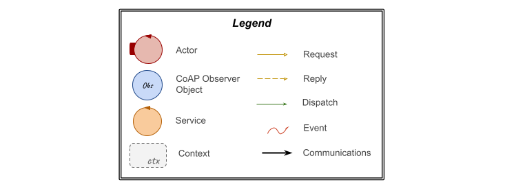
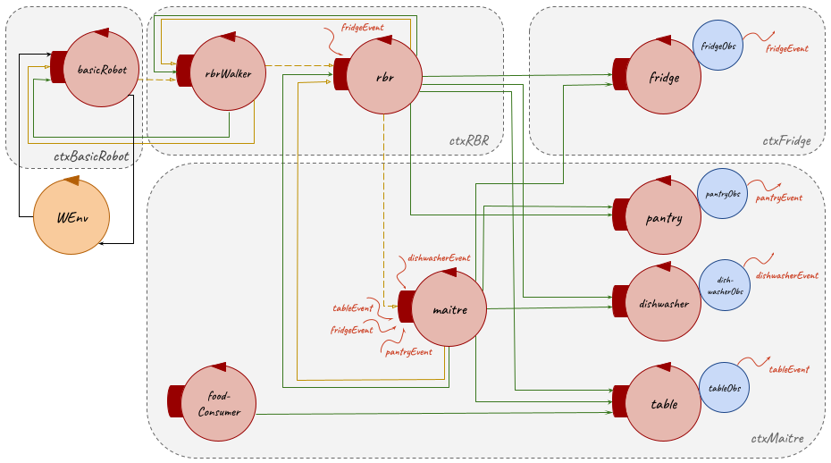

Introduction
The starting point for this SPRINT is the resulting model from the
previous Sprint 1:
| Machine Understandable Architecture Model |
A Possible Graphic Representation |
SPRINT_1 model.qak
|


|
Goal
Problem Analysis
The problems related to this sprint goals, that are already addressed in the
initial problem analysis, are detailed below.
Mapping
As already said in the
initial problem analysis, to be able to map the
room, it's possible to use data collected from a
sensor, which can be represented by a
sonar (in both virtual and real robot; in this Sprint, it will be a
virtual robot (
VirtualRobot2021.html) running on its own
WEnv (Web Environment) to solve the goals about the execution of the
tasks). In the library
it.unibo.qak21.basicrobot-1.0.jar, provided by the customer, the
sonar is already integrated and used by the
basicrobot.
Therefore, the mapping goal is to create a new
room map, which in this sprint will be the virtual
room in the
WEnv, and to make possible this, it's necessary to communicate with the
basicrobot, which, as already detailed in the
Sprint 1 problem analysis, replies with a
stepfail message in case it should find some obstacles (fixed, mobile or wall; in mapping case it will be sufficient to consider only fixed obstacles and walls).
Furthermore, at each step carried out by the robot it's necessary also to update the
room logical map and to do that it's useful the
Planner support available in the library
it.unibo.planner20-1.0.jar and discussed in the
Sprint 1 problem analysis.
Avoid the Impact with Obstacles Requirement
By
requirements, the
RBR must be able to
avoid the impact with obstacles; in particular, with mobile obstacles because walls and fixed obstacles (the
table) are included in the
room map, which in this sprint is produced by the
mapping.
As already said
above and in the
initial problem analysis, to satisfy the requirement
avoid the impact with obstacles, it's possible to use data collected from a
sensor, which can be represented by a
sonar (in both virtual and real robot; in this Sprint, it will be a
virtual robot (
VirtualRobot2021.html) running on its own
WEnv (Web Environment) to solve the goals about the execution of the
tasks). In the library
it.unibo.qak21.basicrobot-1.0.jar, provided by the customer, the
sonar is already integrated and used by the
basicrobot.
Indeed, as already detailed in the
Sprint 1 problem analysis, when the
basicrobot meets an obstacle (fixed, mobile or wall) sends a
stepfail message describing the cause of the failure and after how long it occured.
Therefore, to address this problem, it could be sufficient to manage the
stepfail message received from the
basicrobot and, to do this, there can be different ways:
- temporarily setting the obstacle in the logical map and planning a new path to reach the goal; so to get around the obstacle. Then, before starting the execution of the next steps, the obstacle must be deleted from the logical map;
- waiting for the mobile obstacle to move and so periodically carrying out the movement until the cell that must be occupied will be free.
SCRIVERE CHE LA SCELTA VIENE FATTA IN FASE DI PROGETTAZIONE?
Stop/Reactivate Feature
By
requirements, the
Maître de Salle can use the
stop or
reactivate command to stop or restart an already activated
task, otherwise these commands have no effect.
In Sprint 1 it has been added a new
actor (
rbrwalker LINK) to manage the planning and communicating with the
basicrobot actor to make the robot perform the movements, whether it is virtual or real; in this case virtual.
Therefore, referring to the result of the Sprint 1 and to hypothesis/solution at this problem advanced in the
initial problem analysis, to manage the the stop/reactivate commands received by the maitre, during the execution of a task, a possible solution can be to use the rbrwalker actor which, splitting the path the robot must execute in a steps sequence, at the end of each step it can check if it has received a stop command and in this case it must wait for the reactivate command, otherwise it can carry out the next step.
The communications for sending these commands could be implemented in different ways:
- The maitre could send the stop and reactivate commands to the rbr, which takes care of sending these commands to the rbrwalker;
- The maitre could send directly to the rbrwalker the stop and reactivate commands as dispatch;
- The maitre could send directly to the rbrwalker the stop command as a request, waiting for a failure or success reply, and the reactivate command as a dispatch;
- The maitre could send the stop command as an event that can be received by all the interessed actors, that, for now, it's just the rbrwalker.
From these solutions, the better choose, in this step/sprint, looks to be the
LINK third one, because it's the rbrwalker that is interessed to receive these commands since it takes care of communicating with the basicrobot to move the robot. In future, if the system complexity will evolve and there will be more actors interessed to these commands, it would be necessary to implement the
LINK fourth solution.
immagini per ogni soluzione?
Test Plans
With reference to the
initial problem analysis test plans, below it's reported a functional tests planning related to the goals of this sprint:
- Tests of the state of the RBR to verify that it is stopped after receiving stop command and to verify that it resumes task execution after receiving the reactivate command;
- Tests of the stop and reactivate commands that can be used by Maître de salle only when there is a running task;
- Test of the capability of the RBR to avoid all the possible obstacles.
Project
Mapping
In Sprint 1, for the planning it has been created a project
LINK MapBinGenerator which creats a room logical map taking in input the dimension of the map to create and the coordinates of the obstacles.
Instead, in this sprint, it has been introduced the mapping feature that provides a logical map of any type of room, either it is real or virtual, by exploiting the basicrobot to map it, without having to know the map dimensions or the obstacles positions.
To realize this behavior it seemed to be more appropriate to create a new
actor (
rbrmapper) in
rbr context (
ctxrbr) which, after receiving the request (map) from the rbr actor, takes care of the room mapping and communicating with the basicrobot actor to make the robot perform the movements, whether it is virtual or real (in this case virtual), and to detect when the robot meets a wall or a fixed obstacle (the table in this case). To create the new map it uses also the Planner support.
In particular, after receiving a map request from the rbr actor, the rbrmapper communicates with the basicrobot to move the robot making him explore the perimeter of the room:
- sending to the basicrobot a request message step for forward movements until it receives the reply stepfail when the robot has met a wall; otherwise it updates the logical map using Planner command updateMap every time it receives the reply stepdone;
- sending to the basicrobot, once received stepfail reply, a dispatch message cmd(l) to turn left the robot.
The rbrmapper repeats this sequence of actions until it comes back to the RH position.
Then, this actor starts to explore the internal spaces of the room:
- using the Planner command planForNextDirty, which returns a list of actions to reach the first unexplored cell in the logical map;
- sending a request message step for forward movement, by waiting for the reply stepdone or stepfail respectively in case of success or fail when the robot meets an obstacle (the table), and a dispatch message cmd for the other movements;
- updating at each step the logical map using Planner command updateMap, when it receives the stepdone reply or when it sends the dispatch cmd, or the Planner command updateMapObstacleOnCurrentDirection when it receives the stepfail reply.
The rbrmapper repeats this sequence of actions until it has explored every cell in the logical map.
After this, this actor sends a request message setGoal(0, 0, downDir) to the rbrwalker actor to make the robot to come back to the RH position with the correct direction.
Afterwards, when the rbrmapper receives the reply goalState from the rbrwalker, it saves the created map through the Planner command saveRoomMap and replies to the rbr actor with the message mapdone.
Finally, it terminates itself.
It was introduced also the possibility for the rbr to know if the room logical map it's already present by consulting a prolog file
LINK IsMap.pl and in this case the rbr actor sends a dispatch end to the rbrmapper which terminate itself.
LINK attore + image qak attore + immagine comunicazione tra attori + immagine rbr qak mapping + immagine a stati del mapper
Avoid the impact with obstacles requirement
//TODO: gestire l'ostacolo nel caso in cui occupi il goal:
//Sol 1. fare in modo che il robot aspetti che si sposti l'ostacolo
//Sol 2. se il goal è la home allora sol 1; se il goal è una risorsa allora si cerca l altro goal più vicino?
//Si sceglie sol 1
WENV OSTACOLI
Stop/Reactivate feature
Furthermore, it must be manage the possibility to receive the command before the execution of a task and in this case the stop request must be ignored.
Testing
Below there are exposed some tests made for this sprint project:
- StopAndReactivateTest.kt
- Tests about the correct execution of the stop/reactivate feature:
- StopAndReactivateTest: it's tested that the stop command fail when the rbrwalker it's in a wait state and that has success when it's in moving step than it's tested that the reactivate command works.
after the send of a prepare command to the rbr, which runs the Prepare the room task, it's verified that, for each sub-path the robot must execute, the final position of the robot is the expected one and that the reached resource state has been changed. In particular, this test:
- Sends a prepare message to rbr actor;
- Checks that the robot position, taken from the rbrwalker state, is the expected cell in front of pantry;
- Checks that the crockery removed from the pantry are the expected;
- Checks that the robot position, taken from the rbrwalker state, is the RH position.
Tests of the state of the
RBR to verify that it is stopped after receiving
stop command and to verify that it resumes
task execution after receiving the
reactivate command.
Test about the stop message:
StopAndReactivateTest: it's tested that the stop command fail when the rbrwalker it's in a wait state and that has success when it's in moving step than it's tested that the reactivate command works.
1. Sends a stop request to rbrwalker actor;
2. Checks that stop request fails;
3. Sends a setGaol message
4. Sends a stop request to rbrwalker actor;
5. Checks that stop request works;
6. Sends a reactivate message;
7. Checks that reactivate request works;
8. Checks that the final robot position, taken from the rbrwalker state, is the expected one;
- AvoidMobileObstacleTest.kt
- Tests about the correct execution of the feature avoid mobile obstacle:
- AvoidMobileObstacleTest: it's tested that rbrwalker calculates a new path when meets an obstacle. For this test it's need the presence of an obstacle in the map, placed in the expected path walked by the robot.
- Sends a setGaol message;
- Cheks that an obstacle is met:
- Checks that the final robot position, taken from the rbrwalker state, is the expected one.
Model of System's Logical Architecture
Deployment
SCRUM Context
SPRINT Sequence
After this Sprint and according to the
Product Backlog, listed after the problem analysis, a possibile set of next Sprint could be:
- SPRINT 3
- GUI maître's smartphone software
- Tests
- SPRINT 4
- Deploy on Raspberry
- Prepare the room task: execution by the real robot
- Add Food task: execution by the real robot
- Clear the room task: execution by the real robot
- Tests
Maintenance